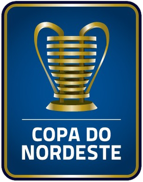
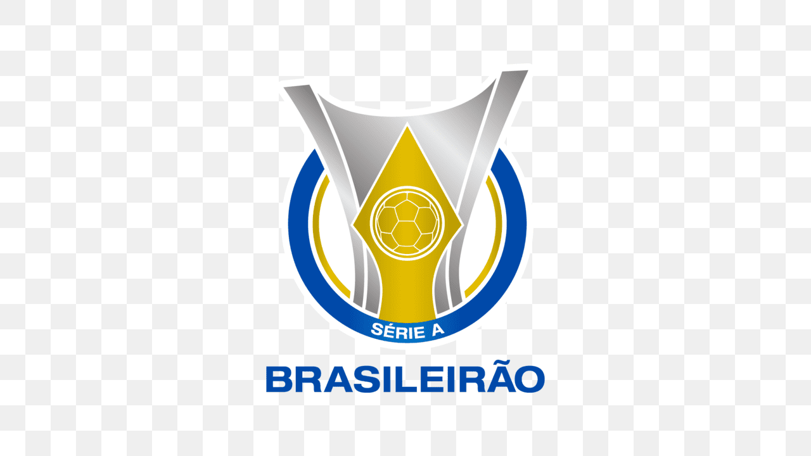
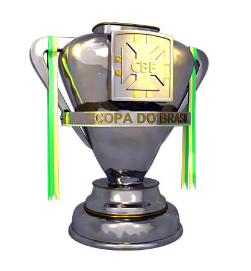

SOBRE O SPORT
A história mostra, ano após ano, que a frase do fundador Guilherme de Aquino em 1905 tinha ares de profecia.
O Sport Club do Recife nasceu e nunca deixou de ser em 112 anos de existência “um autêntico campeão”.
Uma história de valentia talhada por vitórias e títulos. São quase 50 conquistados pelo futebol profissional e mais algumas centenas com as categorias de base e com as modalidades olímpicas e amadoras.
O Sport foi fundado em 13 de maio de 1905, no salão da Associação dos Empregados do Comércio de Pernambuco.
O engenheiro pernambucano Guilherme de Aquino reuniu, como o próprio hino do Leão diz, ardentes seguidores para começar a história do maior Clube do Norte-Nordeste.
No total, foram 67 torcedores admitidos como fundadores, mesmo sem que todos os nomes constem na ata de fundação.
Pouco mais de um mês após o pontapé inicial em sua história, exatamente no dia 22 de junho de 1905, o Sport entrou em campo pela primeira vez para uma partida de futebol.
Um amistoso contra o English Eleven, time formado por funcionários de companhias britânicas sediadas no Recife.
Apesar do favoritismo dos ingleses, considerados “os pais do futebol”, o Sport conseguiu um honroso empate por 2×2.
- 

- 
- 